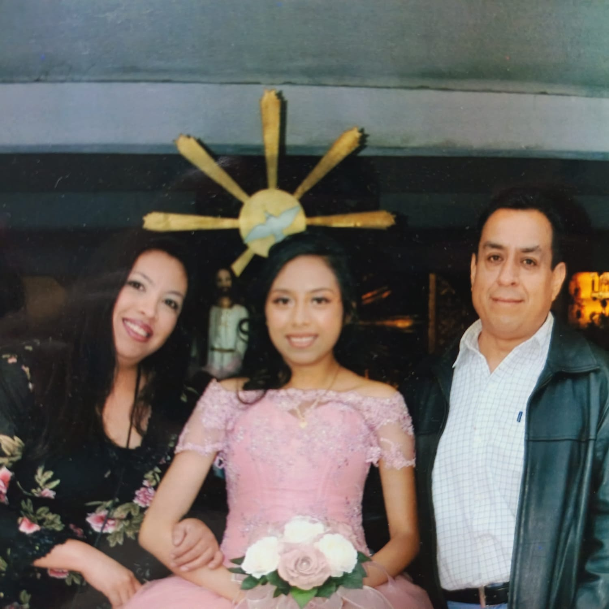
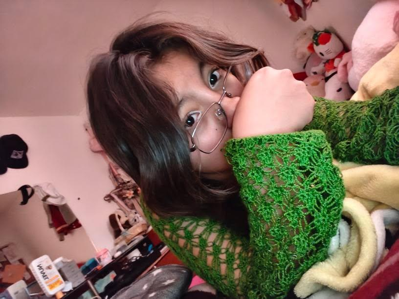
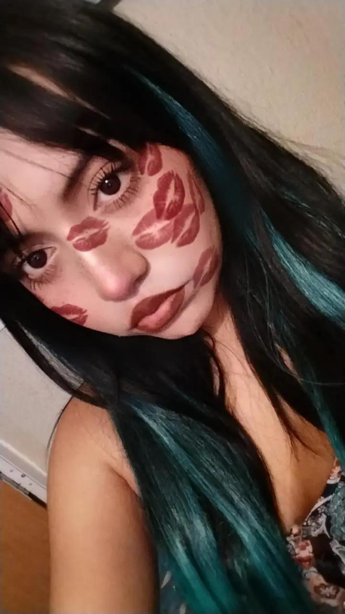
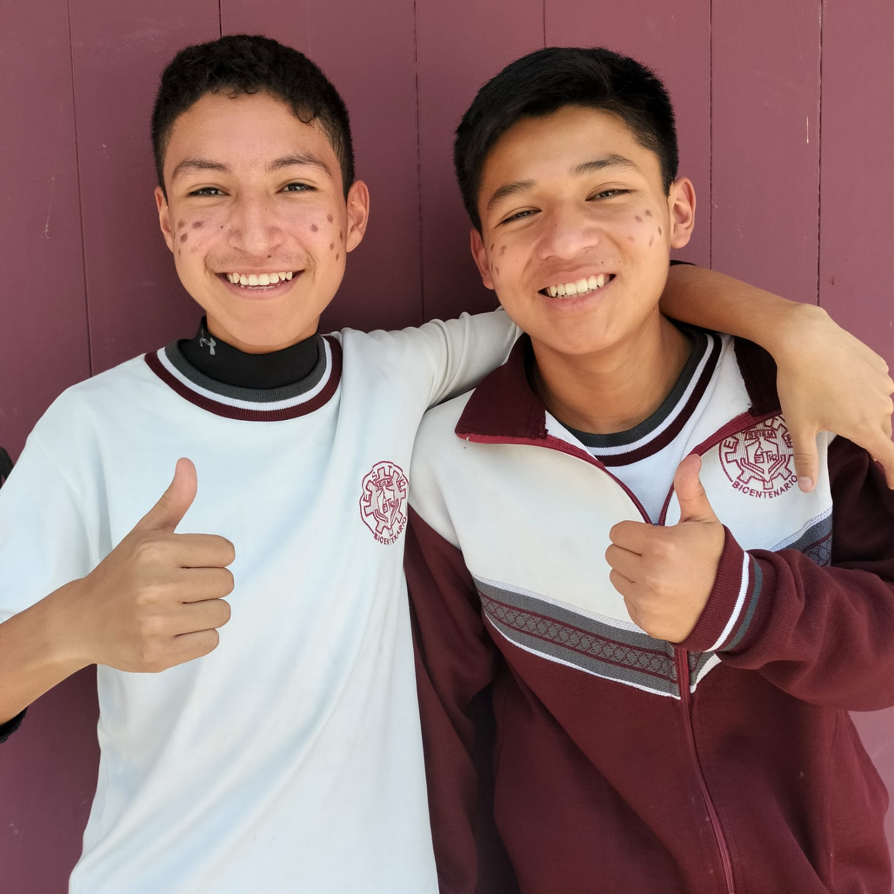
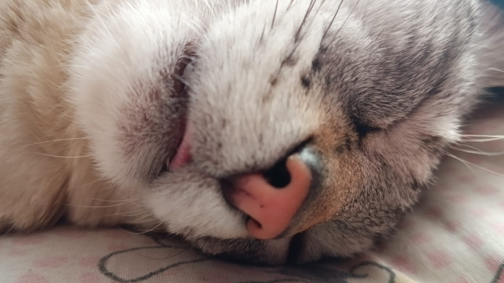

Holiiii!Mi nombre es Nicte Tonantzin Cuevas Alvarado, y actualmente estoy cursando el segundo semestre en el CECyT No.3. Me enorgullece mucho decirlo ya que fue mi primera opcion para cursar el nivel medio superior.
Mi familia
Puedo decir que mi familia es algo convencional. Mi papa es una persona mas reservada y antisocial, pero mas sensible y de muy buen corazon; es el tipo de persona que si te ve con mucha hambre te da su desayuno asi el ya no coma mas. Mi mama, por otro lado, es más efusiva y demostrativa con sus emociones, pero de cabeza un poco más fría.
A pesar de sus dificultades para expresar su cariño hacia mi, ellos han cambiado para hacerme sentir mas amada, y es una de las cosas que mas agradezco en el mundo. Mi papa lo demuestra con actos pequeños, mi mama con abrazos, besos y palabras de cariño. Yo lo expreso abriendome un poco más con ellos y tratando de decirles palabras bonitas aunque me cueste; también trato de controlar mi caracter para no dañar sus sentimientos.
Como todos, hemos pasado crisis como familia a lo largo de la vida, pero afortunadamente han sido cosas que se pudieron resolver con muchas pláticas y terapia.

Amigos
Amo a la mayoria de mis amigos. Han sido personas que se han quedado a mi lado a pesar de todo y eso es algo que agradezco profundamente.
La primera es Nathy. Ha sido alguien indispensable en mi vida, y si algún día me faltara probablemente pensaria en ella todos los dias preguntando porque paso eso. Afortunadamente, sigue a mi lado y yo al suyo, apoyandonos mutuamente a seguir adelante a pesar de todo. Ha sigo una persona que realmente me ha ayudado en momentos dificiles de mi vida, y toco mi alma de una forma tan suave y calida que a veces siento que es un angel que se cayo del cielo por estar adornando las esquinas mas remotas del mismo. Si me pidieran describirla en una palabra sería "amor": es una persona realmente amorosa y muy buena, y de verdad espero que todos tengan a una Nathy en sus vidas. Le tengo muchísimo cariño y mi familia también. Es de las mejores personas que he conocido.

Tambien está mi amiga Yiyi. Es ese tipo de persona que si le caes bien, no importa cuan mal estes, te deja mas bella que nunca. Es super buena con el maquillaje y muy hermosa, de las mujeres mas bellas que he conocido. La conocí en segundo de secundaria cuando entré como nueva. Pensé que me iba a quedar sola, pero ella y Nathy se encargaron de incluirme con sus amigos y no dejarme sola. Tiempo después ella se fue, pero seguimos en contacto. A pesar de la distancia, se que nuestro vinculo sigue intacto. Lloramos y reimos por llamadas, pero se siente como si estuviera a mi lado siempre. Es una gran persona, tanto que otras personas buscan opacarla con cosas falsas, pero quienes conocemos el hermoso corazon que tiene sabemos que es una persona tan genial que arde. Si, es ardiente.

Esta el mejor duo que pude conocer en toda la vida: Fredy y Juan. Juanito es una persona muy caballerosa y genial al mismo tiempo, demostrando que si se puede ser diferente en un mundo patriarcal; es tranquilo, amable y muy divertido. Fredy, por otra parte, es una persona mas efusiva pero igual de divertida que Juan. Los conocí en mi segunda secundaria y hasta la fecha son de las personas mas geniales que conozco. Ellos intentaron enseñarme a jugar futbol y brael stars.Sin saberlo, me salvaron de muchas cosas y me hicieron muy feliz durante mucho tiempo. Hasta la fecha, los quiero con todo mi corazoncito.
Si tuviera que devolverles la felicidad que me han dado a lo largo del tiempo, no podría, porque ellos me han dado DEMASIADO. Extraño sus "que prefieres?" y pasar tiempo con ellos, pero realmente me alegra muchísimo poder llamarlos amigos aun despues de todo este tiempo. Mi mama los quiere mucho, pero no mas que yo. Espero algun dia poder pagarles todo lo que hay hecho por mi, pero se que no podre porque ellos me lo dieron todo cuando atravese mis peores momentos.

Mi amigo Diego tambien es muy especial para mi. Es una persona muy lógica e inteligente, pero muy sensible al mismo tiempo. No legusta admitir que se equivoca, pero tampoco es una persona inmadura. Es genial. He pasado tantas cosas a su lado, y como no? Lo conozco desde la primaria y desde entonces no he permitido que se aleje de mi. El me mostro a girl in red, uno de mis mejores hallazgos. Es leal a sus principios y uy correcto; lucha por lo que quiere y cree que es correcto. Aspirante a justiciero social.
Alepsita, Yami y Beidy no se quedan atrás. Son unas chicas increíbles y super divertidas. Con las tres he vivido diferentes cosas, pero todas igual de especiales. Las quiero demasiado y les deseo lo mejor en sus vidas, porque se que rtienen mucho por dar. Beidy es muy inteligente y persistente; si algo no se le da, lo investiga.
Yami es super divertida, demasiado. Compartimos muchos gustos y desde que la comencé a conocer me cayo super bien. Alexa, por otro lado, es igual de viertida, y tiene los ojos mas bonitos que he visto jamas. A las tres las amo demasiado.
Yutzina de mi colachon, por ella me enfrente a la inseguridad del pais con tal de verla bailar su vals improvisado por sus 16 años. La quiero demasiadooooo. Aunque es muy pero muy floja, es increiblemente inteligente. Sabe cosas que yo no y seguramente tu tampoco sabes. Es increible. Me encantads sus gatitos, son muy tiernos y se ve que se aman mutuamente.

Por último, quiero hacer una mencion honorifica al mejor maestro que pude haber conocido: Silvano ozioziiiiii.
Cuando lo conoci me cayo super mal, no sabia porque. Pensaba que era un maestro super barco y con aires de superioridad, pero conforme lo fui conociendo me di cuenta de que es una persona super carismatica y buena onda. Es un maestro genial y muy empatico.
Recuerdo estar llorando en su taller y cada una de las veces que me dio un consejo de lo que fuera. Cuando tenia algun problema siempre iba con el para que me diera su punto de vista. Me ayudo algunas veces a estudiar para mi examen de admision a la prepa, y me impulso a no dejarme llevar por otros comentarios a a luchar por lo que queria.
Una vez me urgia ir a zacatenco a llevar unos papeles, y estaba super nerviosa porque no me habia enterado de la cita hasta ese mismo dia. De alguna forma logre solucionarlo y sin persarlo fui con el para llorar a gusto. Luego pense que no tenia quien me llevara, y el se ofrecio muy amablemente a llevarme. Era demasiado bueno.
Actualmente lo recuerdo con muchisimo cariño. Se que no tendre un maestro igual, pero me dijo que cualquier dia podia visitarlo en la escuela. El sabe que lo veia como a un papa, y siempre me decia que me parecia en algunas cosas a su hija. No me importa lo que el piense de mi, pero yo lo quiero demasiado incluso si ya no lo veo a diario.
Qué más hay?
Mis virtudes son especialmente variadas. La mas importante considero yo, creo que es que siempre estoy buscando mejorar como persona.Probablemente te hice sentir mal ayer, pero por la noche lo medite y hoy tendre mas cuidado con mis palabras para no herirte. No soy perfecta, pero intento ser lo suficientemente buena para no causar daños alos demas.
Intento ser empatica con los demas pero no dejando que dañen mis sentimientos, y el autocuidado tambien es una virtud.
Como todo el mundo, me es facil ver lo malo sobre mi, pero no quiero ser asi de pesimista. Mi mayor defecto es tomarme todo personal, pero sobre todo, cuando algo me afecta me pongo demasiado triste, DEMASIADO. Actualmente tengo que tomar medicamentos para controlar eso, entonces creo que con eso ya dije suficiente. Tambien soy muy explosiva, aunque actualmente intento controlarme mas.
Para mi futuro solo espero poder vivir en paz y felicidad. Tener un buen trabajo donde no tenga que hacer mucho y tal vez una familia. Mi mama dice que como todos mis novios han sido muy feos, de esposo me va a tocar uno guapo; yo le creo.
Se que soy una persona inteligente, y lo voy a aprovechar tomando cursos de cosas que me ayuden a sobresalir en lo que hago y demás.